模型浏览
3D印提供三维模型的浏览和搜索功能，浏览模型可以按最热和最新的方式，同时，支持按标签归类浏览，如果有明确的关键字，可以按关键字搜索模型。
最热最新模型
可以按最热或者最新的方式来浏览所有模型。
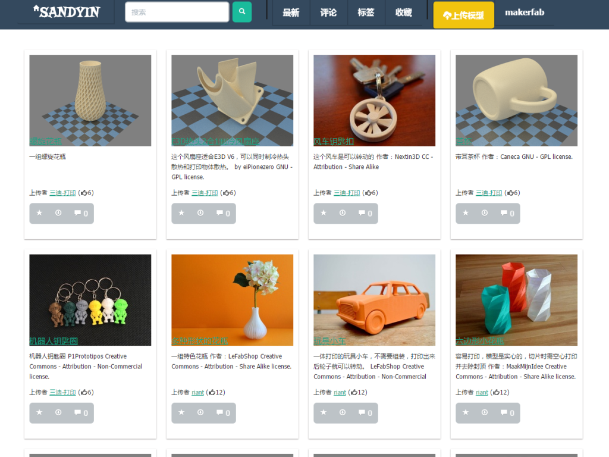
打开3D印首页，可以直接按热度浏览模型，每个模型都会有缩略图或打印出来的实际照片，可以直观的了解模型大概样子。
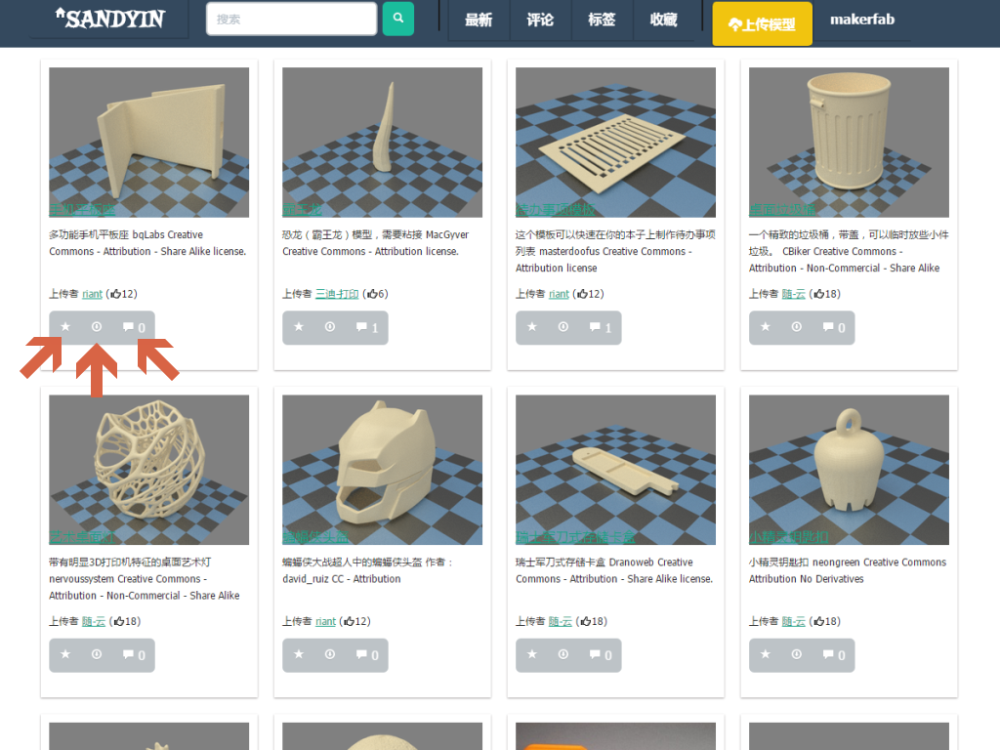
每个模型下面都会有'收藏'，“下载”，“评论”按钮，浏览过程可以直接收 藏自己喜欢的模型或者进入下载页和评论页进行模型下载和评论操作。
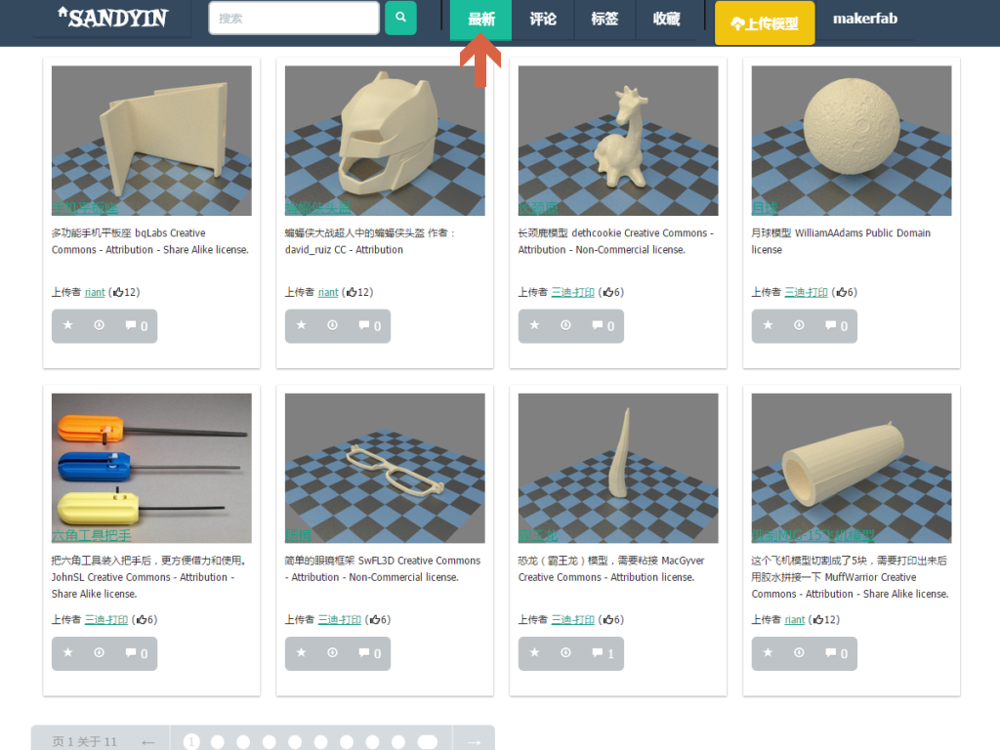
在网页菜单栏点击“最新”可以查看最新上传的模型。
标签浏览
可以按标签归类浏览模型。
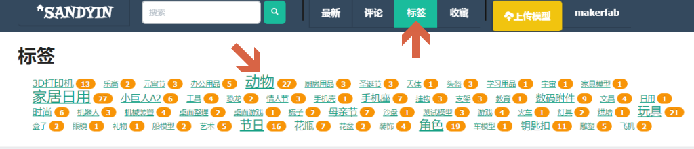
在网页菜单栏点击“标签”可以按标签查看需要的模型。
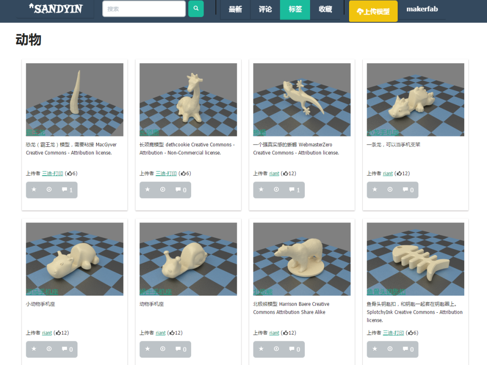
进入“动物”标签后展示的所有动物模型。
搜索模型
可以直接在搜索栏搜索需要的模型。
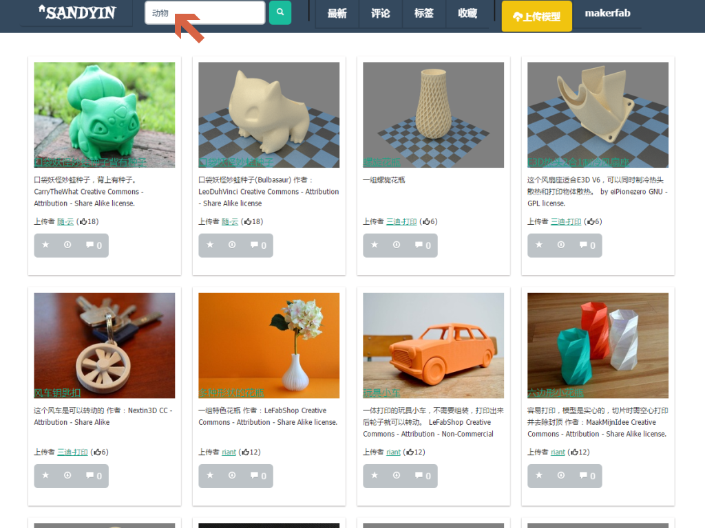
可以通过在首页搜索栏输入动物来搜索所有动物模型
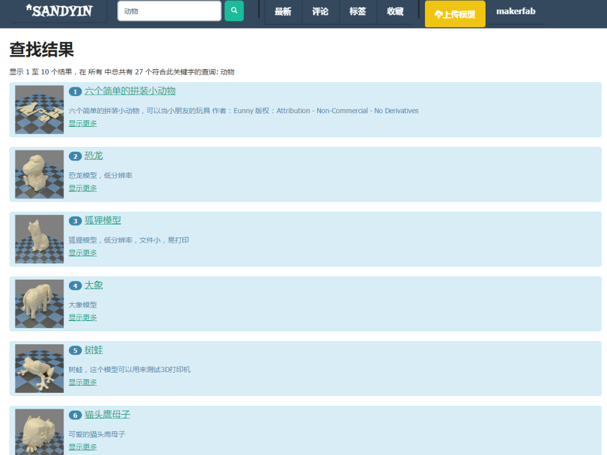
所有搜索得到的动物模型
模型预览和下载
找到需要的模型后，可以对模型进行详细信 息的查看，进行三维预览，下载单个模型或 打包下载所有模型。
模型信息
可以按基本模式或专家模式查看模型信息
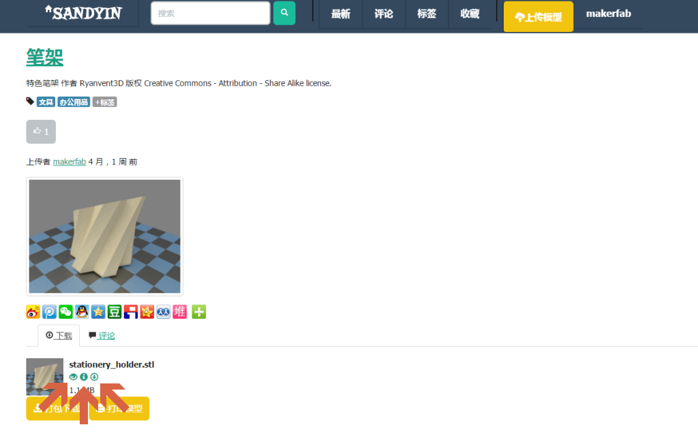 在每个模型下面会有模型文件列表，同时会有一排小按钮，分别是三 维预览，模型信息，单个下载。
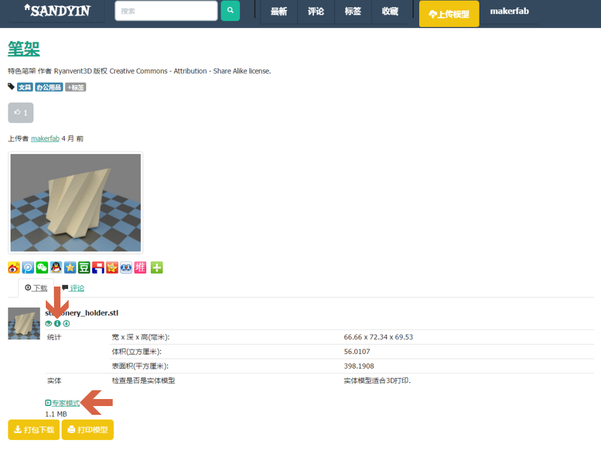 点击模型信息按钮来查看模型基本信息：基本 信息包括长宽高，体积，表面积等统计信息和 是否适合3D打印等基本情况
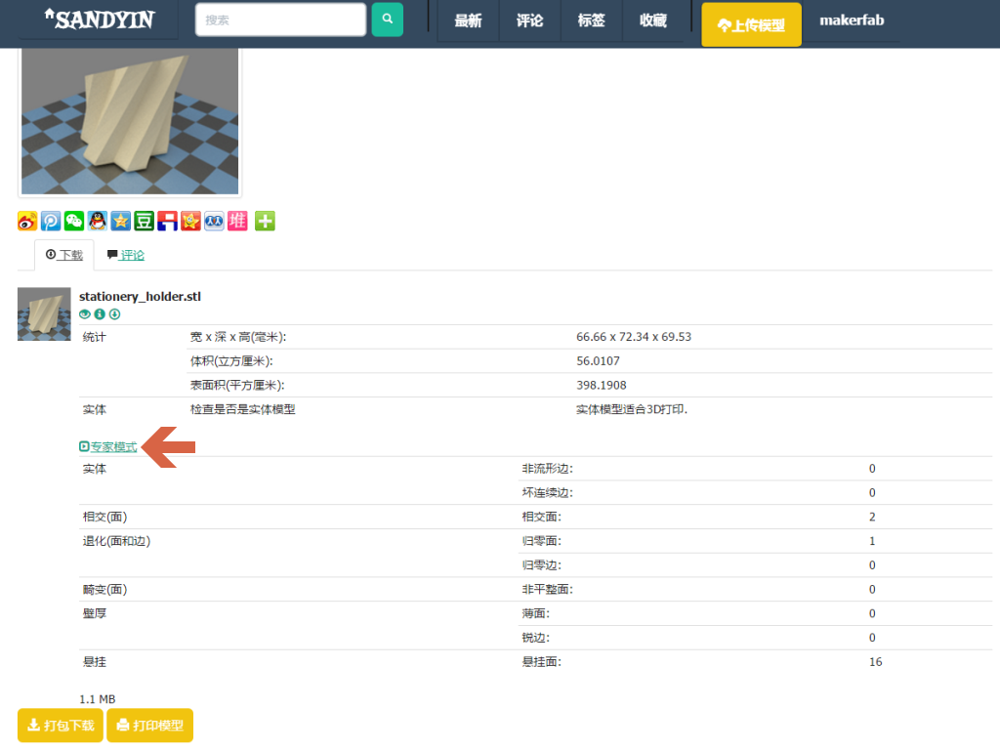 点击基本信息下面的专家模式查看模型 详细信息（专家模式）
模型预览
可以用“三维视图”预览模型
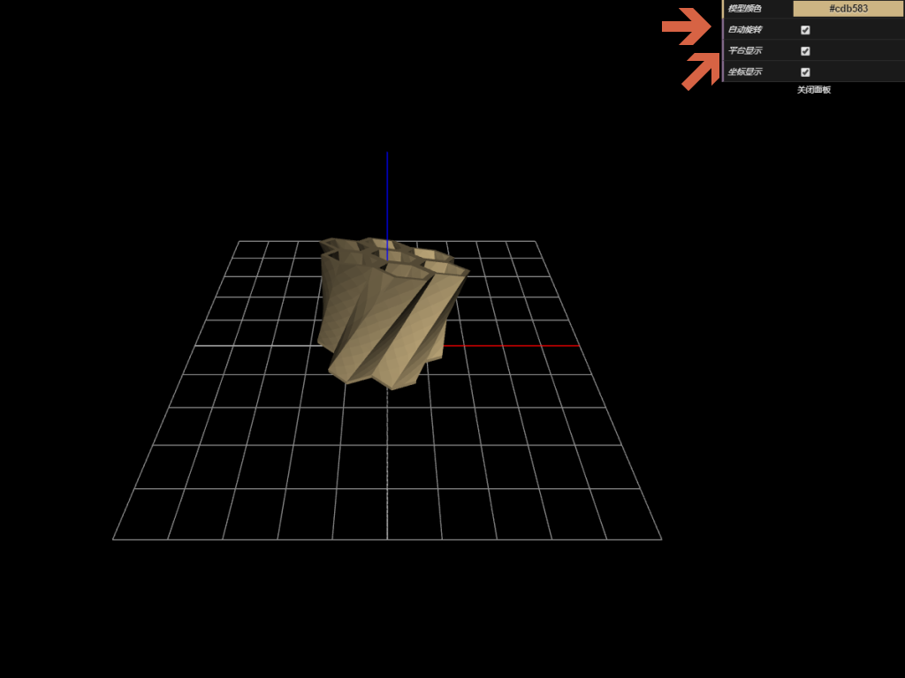
点击模型文件的“眼睛按钮”可以对模型文件进行三维检视，会显示一个尺度平台，然后从 360度的角度自由查看模型。通过控制面板的选项停止自动旋转，显示/隐藏尺度平台。鼠标左键旋转模型，鼠标右键平移模型，滚轮用来放大缩小模型。
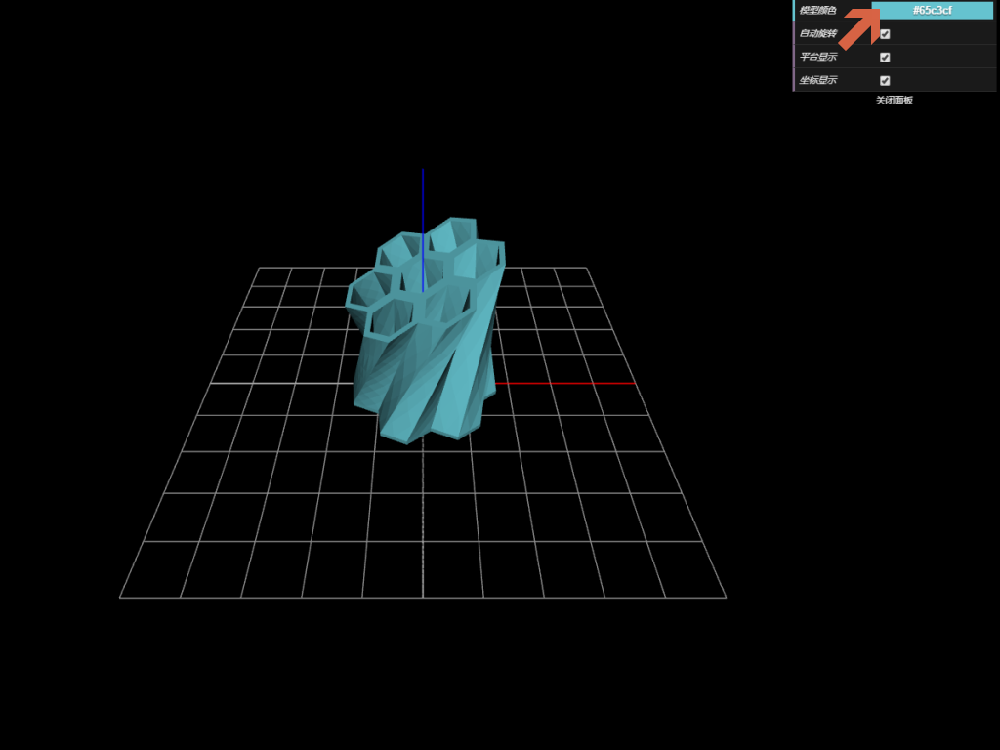
也可以通过控制面板改变模型的颜色进行不同 颜色的效果预览。
下载模型
可以下载单个模型文件，或者打包下载所有 模型文件
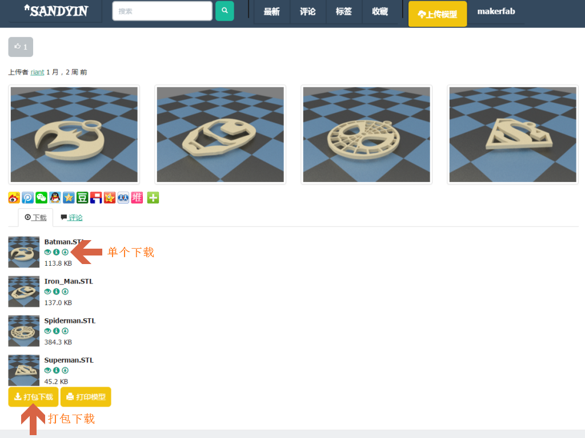
通过模型文件边上的“下载图标”按钮来下载单个模型文件，通过最下面 的“打包下载”来下载该模型的所有模型文件。推荐打包下载，速度会比 较快点。